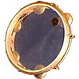
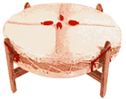
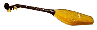
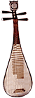

 Pandeiro: Бразильский большой и тяжелый tamborine. Натягиваемую на обруч кожу можно перестраивать. Металлические кольца тяжелее тарелочек, вставленных в корпус tamborine, и инвертированы по отношению друг к другу. Они выдают более сухой звук, который хорошо подходит для исполнения samba и bossa nova.Pandeiro является символом карнавальной культуры. Pennywhistle/Tin Whistle: Небольшая продольная флейта, обычно сделанная из жести, меди, некоторых других металлов или дерева и пластика. Раньше мундштук был из дерева, сейчас чаще из пластика. Имеет 6 отверстий диатонического(мажорного) звукоряда; диапазон около двух октав. У каждого инструмента определенная тональность. Подобные инструменты известны в культуре многих стран, но наиболее значимое место занимают в музыке Южной Африки и Ирландии.  Pow Wow Drum: Традиционный барабан американских индейцев, сделанный в стиле Sioux Drums. Барабан собирают с большим тщанием из 12 секций основных древесных пород New Mexico, по одной на каждый месяц года; части полируют, затем покрывают невыделанной кожей и оплетают. Инструмент использовался в ритуалах исцеления, общения с духами и как аккомпанирующий танцам. Размер барабанов сильно варьируется; на больших барабанах играют несколько исполнителей. |
Panduri: Струнный щипковый инструмент, распространенный в Грузии, Абхазии и Аджарии.  Имеет деревянный корпус удлиненной формы, три струны.В современных грузинских ансамблях народной музыки обычно по несколько реконструированных разновидностей panduri: прима, альт и тенор. Pipa:  Китайская 4x струнная лютня с более чем двухтысячелетней историей. Своим резонирующим, ясным и чарующим тембром она заслужила особое место среди разнообразия китайских щипковых инструментов. Используется равно как солирующий и оркестровый инструмент, как в Китае, так и за его пределами.Гриф pipa, наклеенный на шейку инструмента, представляет собой четыре деревянных зубца, верхние ребра которых являются неподвижными ладами. Остальные бамбуковые лады, от 13 до 26 в форме узких планочек, приклеены на деке. Играют на pipa сидя, оперев низ корпуса о колено, а шейку о левое плечо. По традиции pipa - чисто женcкий инструмент. |